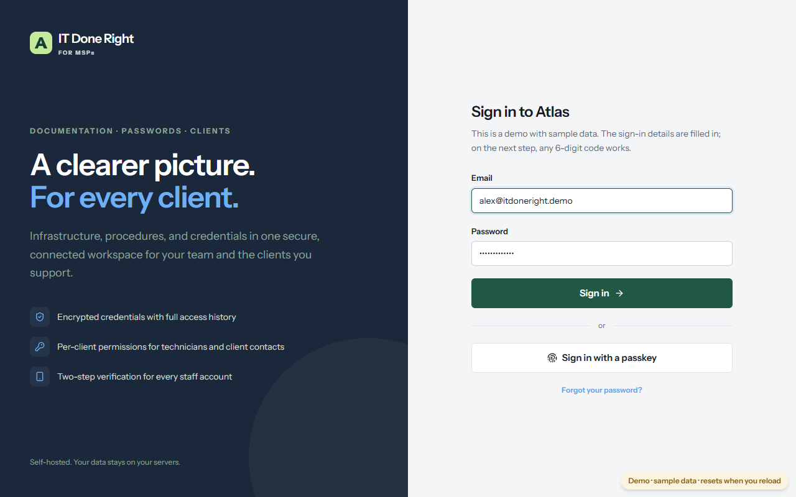
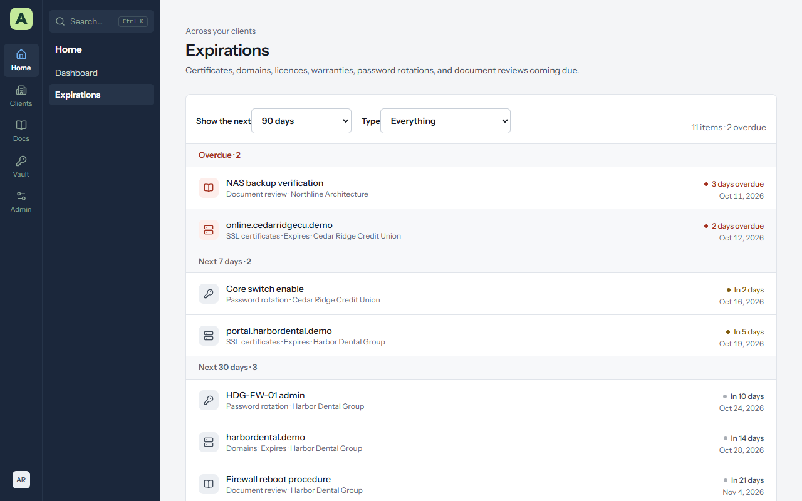

Chapter 6
Monitoring and alerts
Atlas keeps an eye on the dates and device health that are easy to miss: a certificate about to run out, a server that stopped checking in, a warranty that ended last month. This chapter explains each card and where its numbers come from.
The dashboard
The dashboard on Home puts it all on one page: totals across your clients, then the cards below, for every client you can see. Each client's overview has the same cards for that client alone. Choose any tile, slice or row to list the devices or items behind it.


Expirations


Home → Expirations lists everything coming due, grouped by when: overdue, then the coming weeks. It includes:
- Asset date fields marked as expiry dates, such as certificate and domain expiry, licence renewals and warranties.
- Password rotations that are due.
- Documents whose Review by date has come.
If something is missing, check that its layout's date field is ticked as an Expiry date (see Asset layouts).
Email alerts
Atlas emails people who tick Email me about expirations on their account page:
- An alert the chosen number of days before each thing is due.
- A weekly digest on Monday mornings, listing everything overdue or due in the coming weeks.
Administrators choose the alert days and the digest under Admin → Email & alerts → Alerts and logs. Email itself must be set up first, on the same page.
RMM health
From ConnectWise RMM, for clients linked to a ConnectWise company.
| Part | What it shows |
|---|---|
| Devices, Servers, Workstations, Offline servers | Counts across the synced devices. An offline server is marked. |
| Agent online | Devices online, offline, and unknown right now. |
| Stale agents | How long since each agent last checked in: current (under 7 days), stale, very stale (30 days or more), and never reported. |
| Endpoint protection | Whether the antivirus is running, not running, missing, or not reported. |
| Last 30 days | How each percentage has moved over the month. |
Administrators change when an agent counts as stale under Admin → Monitoring → RMM health.
Asset warranty
Hardware assets by when their warranty ends: expired, expiring soon, active, and unknown. For Dell, Lenovo and HP devices with a serial number, Atlas looks the date up from the vendor's public warranty check, with no API keys to set up. A date someone typed in is never replaced.
Under Admin → Monitoring → Asset warranty, administrators choose how many days count as expiring soon, and can untick Look up warranties automatically.
Domain and SSL trackers
Each client's Domain Tracker and SSL Tracker tabs list its domains and certificates with their expiry dates. The Domain and SSL expiry card shows what is expired or expiring.
- Domains are re-checked with their registry weekly, and daily once they're within 60 days of expiring.
- Certificates are read from each website daily.
- Check now on a tracker tab checks straight away.
- The dates are saved on the asset, so they appear on Expirations and in alerts.
Some registries don't publish an expiry date, and a certificate can only be read from a site Atlas can reach on port 443. For those, type the date on the asset.
Under Admin → Monitoring → Domain and SSL trackers, administrators can turn the schedule off, and choose whether to Add SSL certificates for domains automatically when a domain's website serves a certificate the client has no asset for.
Asset statistics
Servers, workstations, switches, network devices, printers and phones, and a chart of operating systems that marks the ones out of support. Choose a tile or a slice to list the devices.
Administrators decide which asset layouts count as which kind of device under Admin → Monitoring → Asset statistics.
Security and compliance
For clients linked to a ConnectWise company:
- Patch compliance for Windows and third-party software.
- Backup and DR readiness.
- Vulnerabilities by severity.
- Security incidents (MDR) that are open.
A synced device's asset page has its own card with missing patches, backup jobs and vulnerabilities. Areas your ConnectWise partner account doesn't use show Not available.
Tickets
When ticket sync is on, the Tickets card shows tickets opened and closed per day and a tile for each status, and Ticket details on each client's overview lists the open tickets that have gone longest without an update. Ticket numbers match the ConnectWise portal, and each one links to the ticket there. Tickets are read-only in Atlas.
Activity
Every client has an Activity tab, and the dashboard and overview have Recent activity: who created, changed, archived or linked what, and when. Several changes in a row by the same person to the same kind of thing show as one line ending "and N more".